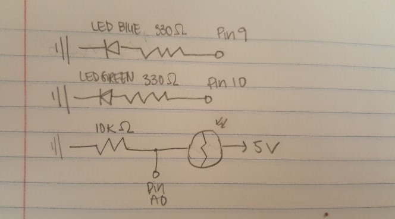
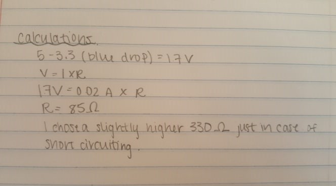
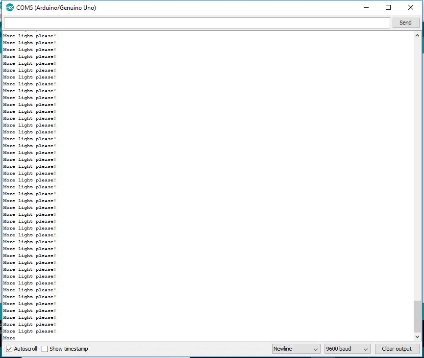
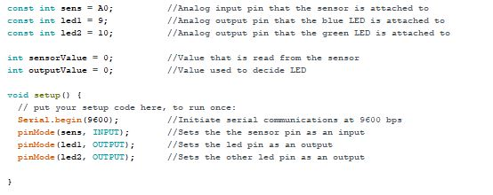
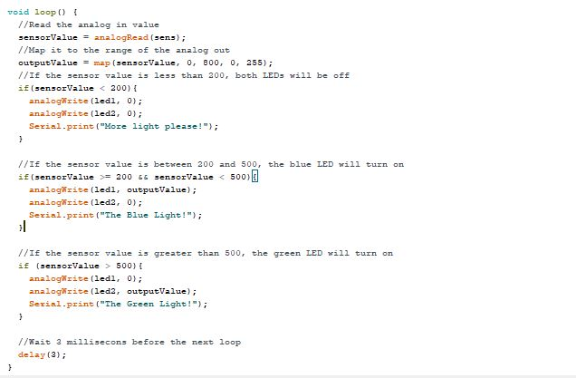

Reksha's Assignment 3!
Here is a picture of my circuit.

Here is a picture of my schematic.



Here is the documentation of my code.
 
A video of my light sensitive LED lights!

When there is little to no light, both LEDs are off. When there is more light the green light is on and when there a medium amount of light, the blue light is lit.I used an additional flashlight for more light.
Here is all the documentation for assignment 3!